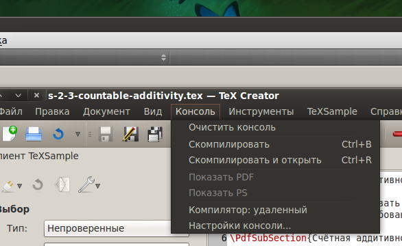

[Назад: 2.3. Режим блоков]
[Далее: 3. Дополнительные функции]
Консоль и компиляция
Установка компилятора
Для того, чтобы компилировать файлы .tex в соответствующие файлы .pdf, .ps или .dvi, вам потребуется специальный набор
инструментов (далее - компилятор).
Windows. На системах семейства Windows используются такие компиляторы, как
TeX Live или MiKTeX
(предпочтительнее последний вариант).
Linux. На Linux используется пакет texlive.
На Debian-подобных системах (включая Ubuntu) этот пакет можно установить при помощи команды sudo apt-get install
texlive. Также рекомендуется по возможности установить пакет texlive-full (предупреждение: данный пакет
может занимать более 700 МБ дискового пространства).
На Fedora компилятор устанавливается командой yum install texlive (также рекомендуется установить пакеты
texlive-latex и texlive-scheme-). Наиболее новые версии пакетов находятся в
этом репозитории.
На Gentoo для установки компилятора используется команда emerge texlive.
Mac OS. Для установки компилятора на Mac OS нужно скачать MacTeX,
распаковать архив и следовать инструкциям.
Более подробная информация о загрузке и установке компиляторов доступна
здесь.
Компиляция файла
Важно: в этом разделе предполагается, что вы установили и соответствующим образом настроили компилятор.
Чтобы скомпилировать файл, он должен быть сохранен на диске. Если файл имеет несохраненные изменения, но уже существует
на диске, то он будет сохранен перед началом компиляции автоматически. Если же файл еще не существует на диске, то
будет вызван диалог, предлагающий выбрать расположение и имя файла, после чего файл будет сохранен и начнется
компиляция.
Чтобы скомпилировать файл, выберите в меню Консоль пункт Скомпилировать:

либо нажмите соответствующую кнопку в окне консоли:
либо воспользуйтесь сочетанием клавиш Ctrl+Shift+B.
Сообщения компилятора будут выведены в окно консоли:

Консоль позволяет пользователю взаимодействовать с компилятором. Например, в некоторых случаях компилятор может
запросить имя файла, если он не был найден, либо какую-то другую информацию. Просто введите нужный ответ и нажмите
клавишу Enter для подтверждения.
Чтобы прервать компиляцию, на системах семейства Windows используйте сочетание клавиш Ctrl+Z, а на системах
Linux - Ctrl+D.
Очистить консоль (удалить содержащийся в ней текст) можно воспользовавшись пунктом Очистить консоль меню
Консоль, либо нажав соответствующую кнопку в окне консоли:
Чтобы скомпилировать файл и автоматически показать полученный в результате компиляции документ, выберите в меню
Консоль пункт Скомпилировать и открыть, либо нажмите соответствующую кнопку в окне консоли:
либо воспользуйтесь сочетанием клавиш Ctrl+Shift+R.
Чтобы просмотреть файл .pdf, соответствующий текущему документу, выберите в меню Консоль пункт Показать
PDF, либо нажмите соответствующую кнопку в окне консоли:
Чтобы просмотреть файл .ps, соответствующий текущему документу, выберите в меню Консоль пункт Показать
PS, либо нажмите соответствующую кнопку в окне консоли:
TeX Creator, как клиент сервиса TeXSample, позволяет зарегистрированным пользователям осуществлять компиляцию на
удаленном сервере. Чтобы переключиться на использование удаленного компилятора, щелкните в меню Консоль пункт
Компилятор, либо нажмите соответствующую кнопку в окне консоли:
Настроить консоль можно, выбрав в меню настроек приложения соответствующую вкладку, либо, выбрав в меню Консоль
пункт Настройки консоли..., либо нажав соответствующую кнопку в окне консоли:
[Назад: 2.3. Режим блоков]
[Далее: 3. Дополнительные функции]